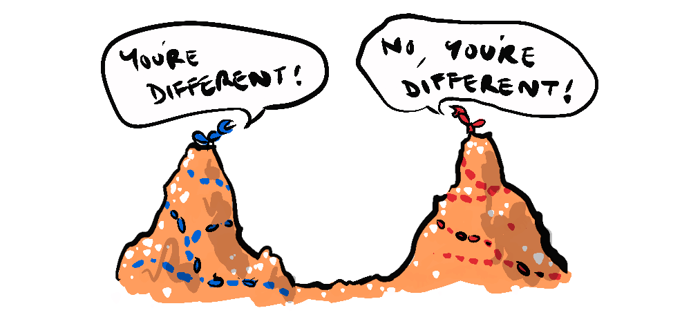
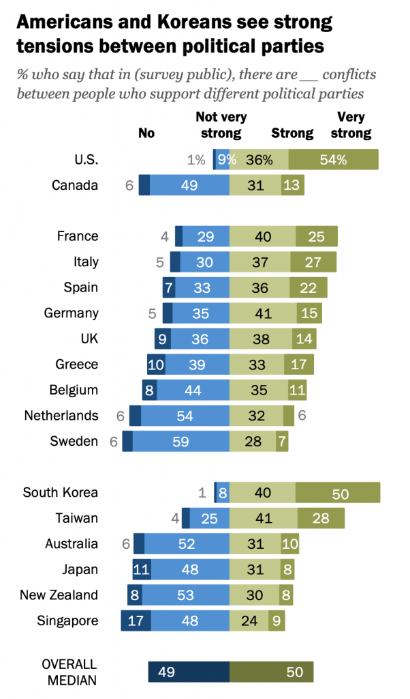
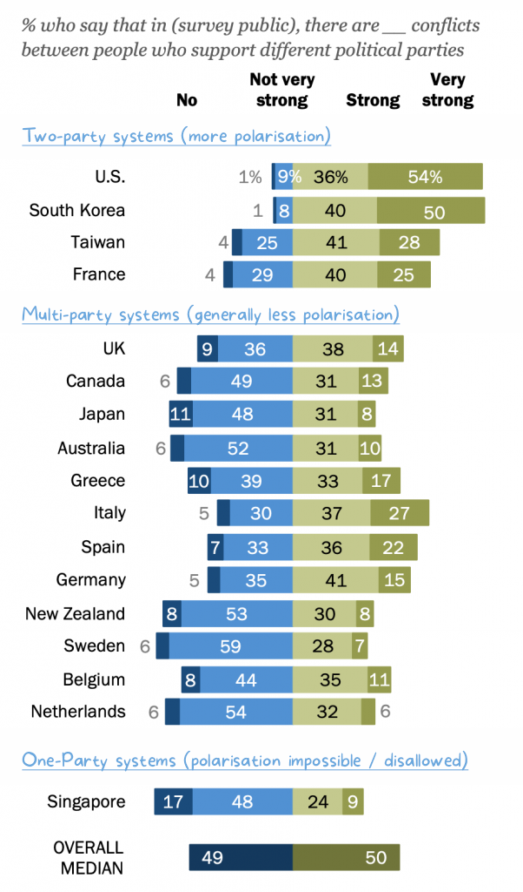

~ the alignment problem no one is talking about: part 4 ~
We have seen that the alignment of individual and collective interests is vital to achieving a future determined by our highest values. In the previous part we explored grand philosophical statements and political decisions that demonstrate humanity's capacity for aligning interests. Now we will look at the issue at three different scales, the human scale, the political scale and ending with a problem that lies in our microscopic biology.
It does not necessarily take political leaders, or great philosophers to balance alignment, there are so many instances where we do this in our every day lives. When we go to work, we provide value to our employer, our coworkers and the company we work for (the collective) that is greater than the value we cost them, and we gain individual benefits greater than that work costs us. Working together we create something, whether it's a film, food, a financial system, or a pair of sneakers that no one of us could have produced alone, and all of this as part of a market economy founded on the idea of mutual gain through self-interest.
It is not from the benevolence of the butcher, the brewer, or the baker that we expect our dinner, but from their regard to their own interest. - Adam Smith
We also take part (with some complaint) in a tax-system that takes a small proportion of our earnings and redistributes it in order to create greater value to people less fortunate, or to form health and educational services that benefit all.
"Taxes are the price we pay for a civilized society.". – Oliver Wendell Holmes, Jr.
We cooperate all the time as part of a social species, it's kind of our wheel-house. So, why are we politically polarised?

When I ask why "we" are politically polarised, I am actually referencing the dominant political system of the US which swings between two parties.
In New Zealand we have a Mixed Member Parliamentary system (MMP) which enables coalitions between major and minor parties allowing for a more nuanced reflection of the will of the people. In New Zealand and other systems like this we see less polarisation.
A recent Pew Research Study claims that stated conflicts between people who support different political parties is a key indicator of political polarisation. Here is one of their graphics showing extreme polarisation in the US and South Korea.

Coincidentally, the US and South Korea have strong two-party political systems. So, I took the list and asked Chat GPT to divide and rank these countries into systems that are technically set up to create two-party systems, and systems which allow for multi-party coalitions.
This is what I got.

Please note I am not a statistician and that this graphic does not feature in the Pew Research Study. I have adapted the graphic in order to demonstrate the significant difference between the polarisation of multi-party systems and two-party systems. As you can see, no multi-party system is more polarised than any two-party system. I have singled out Singapore as an outlier, as it has had the same party in power since its inception, so is essentially a one-party system.
This shows that one solution humanity has discovered for reducing polarisation is creating a greater spread of representation across the political spectrum.
The fact that the structure of a political system can influence the degree with which we conflict with each other suggests an inconvenient truth about humanity: we are not purely rational actors. Instead, our decisions, affiliations, and conflicts are a result of our instinctive responses to a given environment.
"Man still bears in his bodily frame the indelible stamp of his lowly origin." - Charles Darwin
As a social species, we evolved a natural capacity for cooperation with a concern for our immediate collective. As the section above about mundane alignment illustrates, we can work together very effectively in businesses and communities. But this evolutionary programming was not driven by objectivity or cold logical reasoning, nor did it develop with our cosmopolitan, digital age in mind. It was finely tuned for survival among small bands of kin, where physical proximity and immediate feedback were crucial. There, in those intimate circles, we could see, feel, and understand the direct consequences of our actions.

Today our individual and collective actions can have global consequences. Yet, paradoxically, as we become more interconnected, we're retreating into physical and digital silos. We are able insulate ourselves from people who are different, whether it's people in need or people on the other side of the political spectrum. The negative feedback from our actions can often fail to inform our choices because it is felt by someone we never see or it contributes to a problem that doesn't materialise for decades.
In this environment of balkanised physical spaces and digital filter bubbles, it is very easy to fall prey to confirmation bias, gravitating to the centre of one's own particular group. This is understandable, humans have cognitive limitations, we gather a tiny sliver of information through one point on a vast globe, one linear fragment after another and this makes simplified, polarised models of the world appealing.

While we can do much better than we are at present, it might be important to consider that perhaps we're not best suited to solve humanity's alignment problem.
What's interesting is that AI, the very thing we're afraid we wont be aligned with, doesn't have many of these key limitations. Because AI learns through big data training sets, it synthesises broad swathes of information, multiple sides of an argument, experiencing different timescales, places and viewpoints at once. So, you might argue that AI is in fact ideally suited for addressing the alignment problem between the individual and the collective.
In the next part we will explore the possibility of AI helping humanity to get aligned, and even how we might approach AI development so that it is focused primarily on alignment.